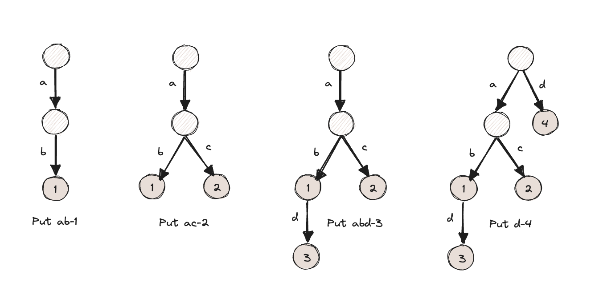
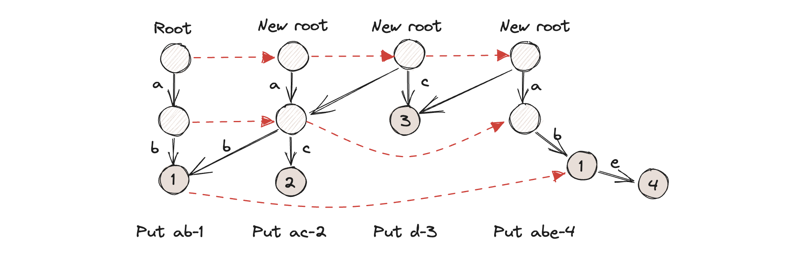
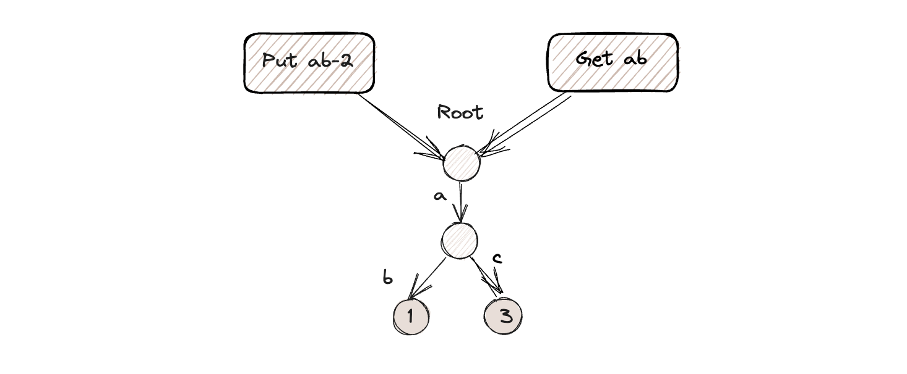
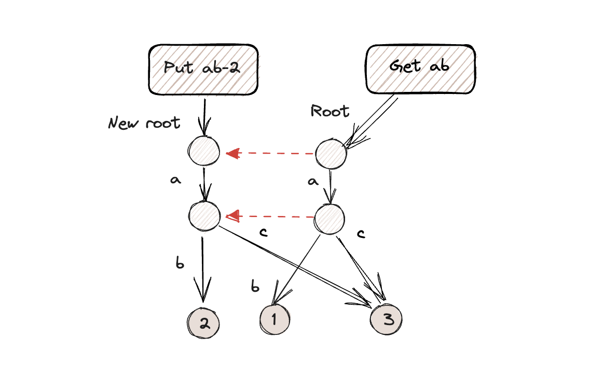
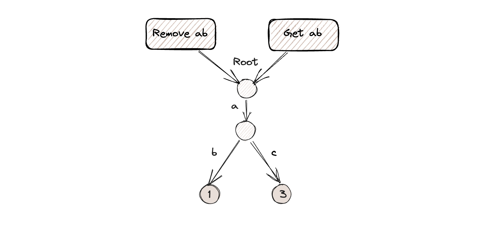

CMU-Bustub 2023-Fall Project 0
之前做完了2022 fall的数据库实现课程。从只会std::cout的c++到整个project完成，了解了很多c++尤其是c++11的特性和STL的用法、选取等。整个过程还是学到了很多有用的知识，无论从语言知识还是系统设计。但之前的实现已经有很多人做过了，并且网上有很多博客记录，时不时看到会给我的实现思路造成一个限制。因此今年想一直跟着这门课推进project，踩一踩坑。
Intro
这个project需要通过写时复制（copy-on-write）技术，实现一个k-v存储的字典树（trie）。给定一个key，trie可以高效的提取出value。Trie中每一个节点可以有多个子节点，每个节点代表key的一个字母（本project中，需要实现以一个string为key，来存储任意类型的value的trie）。
Trie的原理较简单，下面可以通过几个例子来理解Trie的不同操作。

这个操作中并没有支持copy-on-write。删除的过程也很简单，找到对应的存储value的节点，此时会有两种情况。
- 如果这个节点还有子节点，我们肯定是不能删掉的，因为这样就访问不到子节点们所存储的value了。此时仅仅需要把值去掉即可。在project中需要将这个node的类从
TrieNodeWithValue换成TrieNode。 - 如果这个节点已经不存在子节点，我们直接删掉这个节点即可。
Get操作就是简单的搜索整个Trie树，直到获取到想要的值。如果没有找到，需要返回nullptr。
Copy-on-Write Trie
写时复制是一个很常用的提高“拷贝”这一操作效率的技术。这一般用在拷贝操作的代价十分昂贵的场景。比如，copy-on-write fork。Fork是操作系统中的一个系统调用，用来复制一个进程。复制这一操作会给性能带来损害，尤其是读多写少的场景。如果复制的进程在其地址空间内没有做任何改变，那么这个进程本质上和其父进程没有任何不同，因此复制成了多余的操作。Copy-on-write就是为了降低这一性能损耗，假设进程只做读操作，只有当子进程执行写操作时，才会复制一个空间（避免修改父进程的内存，复制之前，子进程的内存空间与父进程共享）。
这个project要实现写时复制的trie。但最开始让我不解的是，为什么要做这样一个数据结构呢？我们每次读写都是在新root上去访问，既然都使用copy-on-write了，为什么不直接在一个trie树上原地做修改呢？这样插入或删除一个就要新复制一个node，既浪费时间又浪费空间。
确实是这样的，我们完全可以不用copy-on-write来实现trie，正如2022
fall的project一样。但这里有一个潜在的需求，我们需要能访问历史版本的能力（multi-versioning）。可从trie_test.cpp里找到CopyOnWriteTest，看一下测试的预期行为。通过阅读代码我们就可以发现，每次做put和remove操作，都会新建一个trie的版本。而这个新建的trie保存的是写操作之前的状态+写入的新状态。我们需要确保两件事：
- 过去的trie只能访问到它所在的状态，且不会随着未来的写操作改变过去的trie所访问到的数据。始终具有一致性。
- 新建的trie能访问到上一个版本的所包含的所有数据（除去自己修改的那部分）。
要实现上面的两点，我们在插入或删除的时候，每一个经过的node都要做复制操作。
Put操作的实现思路是，首先创建一个新的root节点；如果已经存在旧root，就调用clone复制。如果不存在任何root，直接创建一个新的root节点。从root节点开始，对每一个key中的元素开始查找遍历。如果找不到，就直接新建一个，并记录到children_里。如果找到了，调用clone复制。最后根据new root返回一个Trie。
Remove操作，我的实现方法是使用递归，先一直深入到存储值的节点（每经过一个结点就做一次clone）。当到达底部的时候，判断是否有子结点。如果有，则将TrieNodeWithValue转化为TrieNode；如果没有，则直接删除。还有很多细节问题可以通过debug给代码打补丁解决。
下面的图片展示了copy-on-write trie的put流程，可以加深对多版本的理解。

Concurrent Key-Value Store
上一个任务中我们实现的是单线程的copy-on-write trie，这并没有办法支持多线程并发的插入和删除。这个任务已经为我们实现了TrieStore的定义文件，TrieStore定义了root_，write lock以及root lock。TrieStore所做的事情就是在之前实现的单线程Trie上增加一层封装，支持并发操作。同时，实验手册需要我们实现一个可以共多个reader和一个writer同时访问的trie。意思就是，当一个线程在修改这个trie时，其他线程仍然可以读取旧root下的值。当一些线程在读取时，writer仍然可以向root写入，而不用等待读取完成。
这其实和我们平时接触的并发场景并不一样，也和2022 fall的并发trie要求不同。我们平时接触的并发，都是读写互斥的。当一个线程对trie进行读取操作时，我们不可以对trie写入。同样当trie被写入时，我们不可以读取trie。这是由于2022 fall的trie是单一版本所导致的。
那为什么多版本可以让读写同时进行呢？
观察Trie的类实现，里面仅仅定义了一个root的共享指针。假设我们当前什么都没有。首先创建一个trie store的实例对象。
auto store = TrieStore();调用TrieStore的Put方法，假设我们Put("ab", 1)。首先锁住write
lock，再锁住root
lock。获取root的一份拷贝，这里的拷贝仅仅是在root共享指针所指向的内存对象中增加了一个引用（这里put时，root是nullptr）。
获取trie的拷贝之后，就可以释放root lock。进一步，put中调用trie的put：
root = root.Put(key, std::move(value));此时，root变成了一个新版本的root。我们在获取root lock，刷新trie store中的trie。完成了更新操作。
上述描述的情况还是单线程场景，接下来我们在这个基础上再Put("ac", 3)。然后看一下多线程场景会发生什么，尝试理解为什么copy-on-write
trie可以读写并行。
Put("ab", 2)和Get("ab")的请求。如果他们是同时的，那我们预期的行为是Get操作始终可以读取到之前存储的"ab"=1。第一种情况，Put先获取root
lock，此时Get会等待。等到Put释放root lock的一瞬间，Get获取到root
lock。两者近乎同时完成对同一个trie的复制。也就是说，当前的root有2个指针指向它。

当我们执行
root = root.Put(key, std::move(value));内部所做的操作是copy-on-write。此时这个root指向了新版本的trie。Get操作则访问的是第一个版本的trie。因此不会冲突。

第二种情况是Get先获取到root，这样其实和Put一样，由于copy-on-write的存在，互不影响。
那为什么Get需要一个ValueGuard呢？这是因为trie实现的Get返回的是Value的指针（还不是智能指针，因此不受其保护）。智能指针指向的是Get所找到的存储值的结点TrieNodeWithValue，而不是它内部的value。具体可以通过下面的图例理解。假设我们在Get("ab")的同时，也有一个并发的Remove("ab")。

ValueGuard的本质是在root所指的对象上再加一个reference count。当Get操作和Remove操作全部执行完后，如果没有ValueGuard再对root所指向的对象再加一个reference count，那么这个reference count就会变成0。意味着这块内存会被清除，此时通过Trie的Get方法获得的val就是一个悬挂指针。